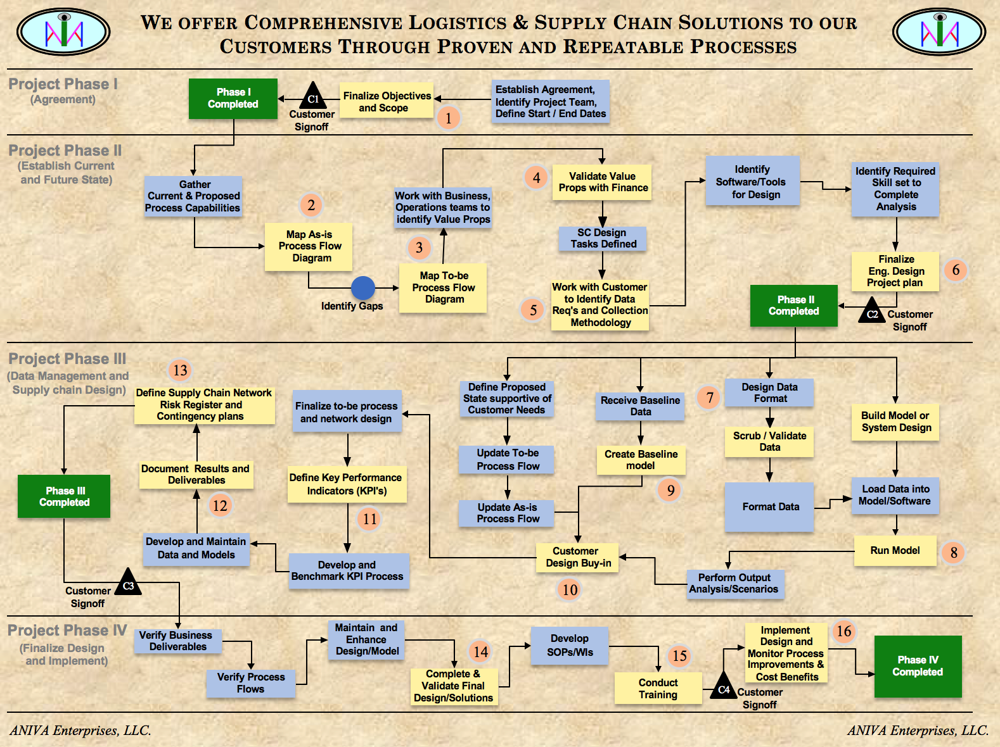
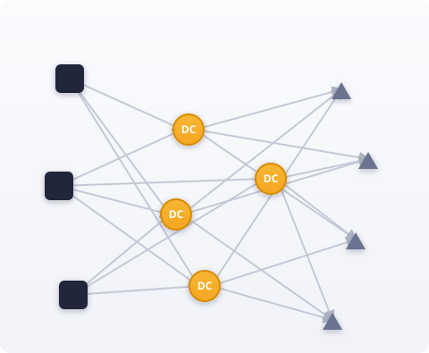
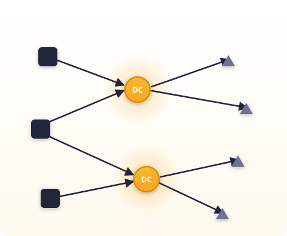
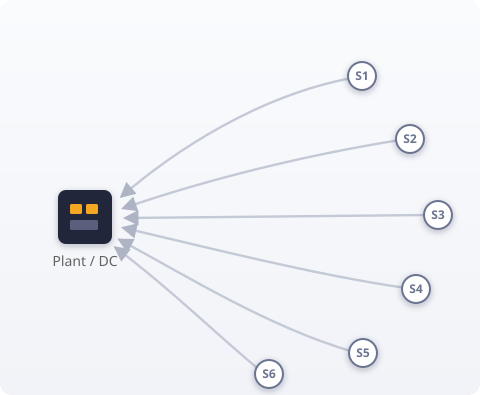
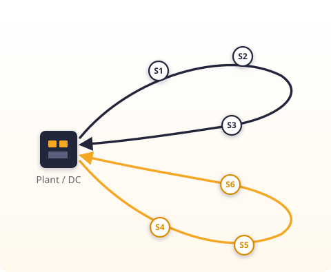

ANIVA Enterprises · Consulting Services
Network design, carrier procurement, process excellence and measurable cost savings — delivered on-site, hands-on, by a senior practitioner.
What we do

Established in 2007, ANIVA is a Delaware Corporation focused on:

Our proven 4-phase, 16-step design process guides us in creating the least-cost logistics and supply chain solution:

Depending on the project, we generate cost savings of 5–10% of the customer's logistics & supply chain spend by:
Our demonstrated methodologies with Valora, custom-built Excel-based models, off-the-shelf software packages and footprint tools give us the competitive edge to successfully solve our customers' logistics and supply chain operational issues and exceed their expectations.
How we work
On-site, inside the customer's team, typically 60–90 days — with value measured against a baseline agreed before the work begins and customer sign-off at every gate.
Customer sign-off gate · click a stage to see what happens
Stage 1 of 6 · Week 1
We start with your team: kick-off with leadership, a clear problem statement and scope — and, critically, the baseline that value will be measured against.
You own: scope document and agreed targets
Stage 2 of 6 · Weeks 1–3, on site
We walk the operation, interview the people who run it and map the current state — then capture and cleanse the data until it reconciles.
You own: a single source of truth
Stage 3 of 6 · Weeks 3–6
We develop the model and the tool that fits the need, run what-if scenarios and quantify the opportunity — validated with Finance and Operations.
You own: refreshable models and a quantified opportunity
Stage 4 of 6 · Weeks 5–8
Decision-support tools and future-state network, process or strategy development — pressure-tested with the people who will run it, with business rules, RACI and KPIs defined up front.
You own: documented design, SOPs and RACI
Stage 5 of 6 · Weeks 8–12
We deploy the tool, run the bid and roll-out the process — side by side with your team until it is fully operationalized.
You own: live tools, carrier contracts and a trained team
Stage 6 of 6 · Ongoing
Savings and service are tracked against the agreed baseline, with a KPI dashboard and regular reviews — and decision-support tools and models your team re-runs on its own.
You own: KPIs and governance — value-delivered sign-off
The detailed work plan
The work plan behind the six stages, run on every engagement since 2007 — from first agreement to implemented solution, with customer sign-off closing each phase. Numbered circles are the sixteen steps; green boxes mark phase completion.

The complete 16-step flow, phase by phase — click to open full sizeCustomer sign-off closes every phase (C1 – C4)
To make an immediate appointment for ANIVA Enterprises Logistics & Supply Chain Consulting services, please contact Dr. Mani Manivannan via email at mani@anivaenterprises.com
Explore
A sample of consulting engagements across trucking and air cargo, oil & gas, chemicals, automotive, beverage, retail, industrial services and consumer products. Customer identities are withheld; each summary describes the situation, our role, and the value delivered at a high level. Use the filters to browse by theme, and expand any card for the detail.
A regional industrial-services contractor deploying company field labor and subcontractors across plant-outage, embedded on-site and general service work had little visibility into how its labor pool was being used and no structured way to pre-plan staffing for upcoming projects. ANIVA led discovery on site and built an integrated decision-support toolset the customer's own team now runs.
A Fortune 10 retailer with a private fleet and a supplier-to-DC / DC-to-store network wanted to understand true network profitability beyond lane-level cost accounting, and to cut empty miles and lane cost across inbound and outbound flows. ANIVA developed a portfolio of opportunities anchored by a network profitability methodology.
A private-equity-owned flatbed truckload carrier wanted a holistic, quantitative view of its network economics — which markets and lanes create or destroy value once upstream and downstream effects are counted — to guide pricing, sales, planning and operations, and to give its board a simple measure of network performance. ANIVA led the project with the customer's BI, finance, operations, planning, sales and pricing teams.
An early-stage, founder-run consumer-products start-up launching bamboo-fabric apparel, bedding and pet products had no manufacturing base and no import supply chain. ANIVA acted as its outsourced sourcing and supply-chain lead for seven months — from supplier research through the first production shipments arriving at its U.S. warehouse.
A global lead-logistics (4PL) provider and its international freight-forwarding division, supporting a fast-growing electric-vehicle manufacturer, were seeing invoice rejections, rework and slow cash collection — with no documented procedure from shipment order to payment. ANIVA led a cross-entity review to build a robust, repeatable order-to-cash process with clear ownership.
A publicly traded dry-van truckload carrier — company drivers, owner-operators and a brokerage arm — wanted long-term profitability inside a contract-network structure: denser lanes and markets, more diversified customers, market-aligned rates and less out-of-network freight. It needed an objective, network-aware way to measure market and customer profitability and feed it into pricing and bids. ANIVA built the model behind that strategy.
A large regional beverage bottler and distributor had drifted into heavy spot-market exposure as volumes grew and capacity tightened; earlier bids had been out of step with the budget cycle and lacked firm business rules and a routing-guide waterfall. ANIVA joined the customer's core bid team to build an in-house bid capability and a dedicated-plus-one-way truckload network with guaranteed, contracted capacity.
A Fortune 100 chemical manufacturer, mid-way through an enterprise process-transformation program, needed a state-of-the-art design for its international packaged-cargo (FCL export) process — something it could not achieve without a freight forwarder's expertise and systems. ANIVA worked on the forwarder's project team to co-design and pilot the new process with the shipper and its transformation consultants.
A global lead-logistics provider (4PL) implementing a managed-transportation program for a Fortune 500 oilfield-services company found much of the shipper's international ocean and air freight moving un-contracted at spot rates across every region of the world. ANIVA served as a core member of the bid team charged with bringing high-volume lanes under contract through a structured global bid.
The transportation and fleet subsidiary of a large regional beverage bottler — company assets, an owner-operator network and a brokerage — was growing fast, but its heavily customized TMS was delivering only part of its potential, with tedious manual workarounds. In a 30-day assessment, ANIVA reviewed systems, processes and organization against best-in-class carriers and delivered a prioritized roadmap plus a two-phase optimization proposal.
A regional inter-island air cargo carrier — an operating company of a diversified transportation group — had just moved into a new, larger cargo facility and was about to install a roller-deck system, yet its operation showed excess handling, no put-away or picking discipline and fixed crew sizes regardless of workload, with productivity per employee slipping. ANIVA reviewed day and night operations on site and delivered a prioritized improvement plan to leadership.
A Pacific Northwest truckload carrier — an operating company of a diversified transportation group — was losing profitability to empty miles, driver dwell and pricing decisions made without system-wide visibility. In a six-week engagement, ANIVA built the original Network Value Formulation: the marginal value of a truck in every market area, and a Total System Contribution score for every lane.
A year into a 3PL supply chain management agreement covering a Detroit-based sub-assembler — shipping instrument-panel assemblies and raw materials for a major OEM's vehicles — the operation had launched without network design or carrier bidding and was being managed reactively, lane by lane. ANIVA assessed the agreement end to end and turned it into a governed, measurable operation with a costed savings roadmap.
A Detroit-based tier-1 automotive interiors supplier to a major OEM ran its production control & logistics largely by hand, with no warehouse or yard system, rising inventory days and downtime risk. ANIVA designed and ran the outsourcing decision end to end: RFP, bid package, technical reviews, bid analysis and final service-provider selection between two competing proposals.
A truckload, LTL, flatbed and multimodal carrier — an operating company of a diversified transportation group — links a lower-48 gateway terminal by ocean sailing to a network of terminals in a remote northern market. It had rich revenue data by lane but little visibility into lane-level operating cost, relied on tribal knowledge with no route- or load-planning tools, and was spending heavily on leased trailers and fragmented purchased transportation. ANIVA analyzed the network end to end and delivered a prioritized cost-reduction roadmap.
To discuss a similar engagement, email mani@anivaenterprises.com.
Design the least-cost network for the next three to five years — modeled, simulated and agreed with your team before a single move is made.
Data requirements are defined up front — six categories, and nothing more than the design needs.
Strategic network design — baseline vs. optimized
Illustrative — optimize the number, location and role of warehouses / DCs against total landed cost and service

4 DCs · overlapping territories · crossing lanes

Right-sized DC footprint · clean territories · lower total landed cost
Quick-win cost reduction on the network you run today — route, cube, frequency and mode, delivered in weeks.
Four logistics cost levers — open each to see the cost elements we attack.
Data collection involves part packaging information, supplier and plant location data, delivery needs, dock constraints, transportation modes, truck capacity and other critical information.
Tactical inbound optimization — route, cube & mode
Illustrative — consolidate direct shipments into milk runs, fill the cube, and pick the right mode

6 suppliers · 6 part-full trucks · empty miles

2 milk runs · full cube · right mode · fewer trucks
Route · cube · frequency · mode — optimized with commercial planning software, within production and dock constraints
The network, in motion
A sample week of real truckload movement spanning markets from Texas up to Boston and down to Florida. Every dot is a tractor traveling between two markets — blue when loaded, orange when running empty.
One week of movement — 207 truckload legs across 76 markets, sampled from a two-week period. Each dot is positioned by its own start time and duration. Illustrative of the network visibility behind every ANIVA engagement — and the movement data Valora turns into network value.
Introducing
A network value creation application for truckload operations — pricing, network balance, load selection and customer profitability in one place.
Measured per truck-day and per load, for every market — not rate per mile.
Rate per mile hides where a fleet actually makes money. Valora measures every load by its Total System Contribution — the profit on the load plus the change in network value between where it ends and where it starts — per truck-day and per load, for every market.
Runs on your own leg-level history — no system integration required. Built for regional and national fleets of roughly 500 to 2,000+ tractors.
Let us show you your own number — start with an assessment.